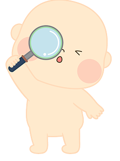
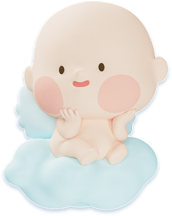
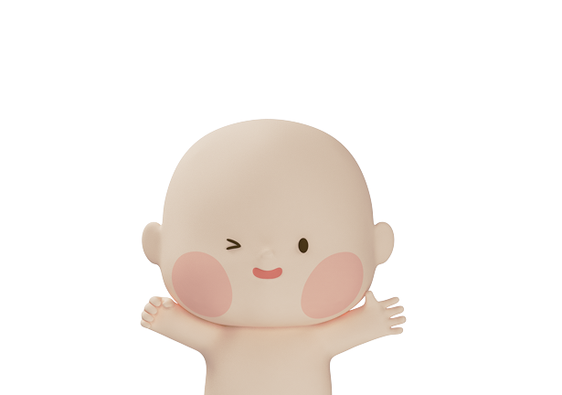

우리 아이 기질,
전문 검사로 만나보세요
임상심리전문가가 감수한 기질·양육 검사 — 보험 멤버십 혜택
검사 프로그램
검사를 완료할수록 연계 리포트가 열려요

우리 아기는 어떤 기질을 타고났을까요?
하루의 흐름을 따라 10개 장면 속 아이의 모습을 여쭤볼게요
- 지난 2주 아이의 실제 모습을 떠올리며 답해 주세요. 정답은 없어요.
- 겪지 않은 상황은 "해당 없음"을 눌러 주세요. 더 정확한 리포트가 돼요.
- 중간에 나가도 응답은 저장돼요.
- 엄마·아빠가 각자 응답하면 부부 시선 비교도 볼 수 있어요.
본 검사의 문항과 해석은 이수진 임상심리전문가의 감수를 거칩니다

리포트를 만들고 있어요

이번엔 부모님 차례예요
나의 기질과 양육 스타일을 알면, 아이와의 기질 조합 리포트가 열려요
- 지난 2주 나의 실제 모습을 떠올리며 답해 주세요. 좋은 양육자 시험이 아니에요.
- 양육 스타일에는 우열이 없어요 — 통제도 자율도 각자의 강점이 있는 스타일이에요.
- 배우자도 각자 응답하면 부부 비교가 열려요.
오늘, 부모님은 어떠세요?
아이 말고 나. 지난 2주 나의 마음 컨디션을 5분 안에 살펴봐요
- 지난 2주 동안 얼마나 자주 그랬는지 편하게 골라 주세요.
- 점수를 매기는 시험이 아니에요. 지금의 나를 알아차리는 시간이에요.
- 3개월마다 다시 체크하면 나의 컨디션 흐름이 그래프로 쌓여요.
이수진 Lee Sujin
아이의 타고난 결을 부모가 이해하도록 돕는 것, 그것이 제가 이 검사를 감수하는 이유입니다.
자격 · 경력
이해받아야 할 아이가 있을 뿐이에요."
상담실에서 만난 수많은 부모님들은 늘 같은 질문을 안고 오셨습니다. "우리 아이는 왜 이럴까요?" 그런데 이야기를 나누다 보면, 아이가 문제가 아니라 아이의 기질과 부모의 기대가 어긋나 있던 경우가 많았습니다.
기질은 옳고 그름이 아니라 타고난 방식입니다. 조심성이 많은 아이도, 에너지가 넘치는 아이도 각자의 속도와 강점이 있습니다. 그 결을 부모가 먼저 알아차릴 때, 아이는 "고쳐지는" 대신 있는 그대로 자라납니다.
이 검사가 유행처럼 소비되는 성격 테스트가 아니라, 부모님이 아이를 조금 더 깊이 이해하는 믿을 수 있는 출발점이 되도록 문항 하나하나와 결과지의 표현까지 함께 살피고 있습니다.
인터뷰
감수를 맡으며 나눈 이야기
이 검사를 감수하기로 하신 이유가 있나요?
부모님들이 결과지를 볼 때 가장 조심해야 할 점은요?
부모님께 전하고 싶은 말이 있다면요?
8가지 기질 유형
접근·활력 × 정서 표현 × 자기조절 세 축의 조합이에요. 어느 유형이든 '좋고 나쁨'은 없어요 — 서로 다른 강점이 있을 뿐이에요.
관리자 대시보드
기능 골격만 구현된 상태예요. 추후 서버 연동 시 실데이터로 대체됩니다.